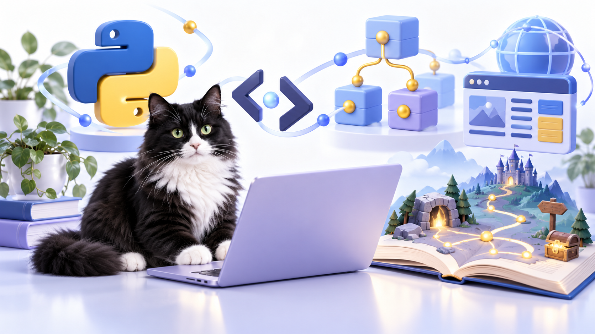

Python Start
Інтерактивний курс для початку програмування. Знайомтеся з Python, запускайте код у браузері та крок за кроком створюйте свої перші програми.
Python: шлях до проєктів
Курс для тих, хто вже знає основи Python. Поглиблюйте знання, розв’язуйте практичні задачі та створюйте власні проєкти — від задуму до результату.
Створимо сайт?
Інтерактивне знайомство з HTML, CSS та JavaScript. Створюйте структуру сторінки, змінюйте її вигляд, додавайте взаємодію та одразу перевіряйте результат у браузері.
Технології програмування
Одна мова не дає повної картини програмування. Порівнюйте три мови, досліджуйте спільні принципи та опановуйте структурне програмування на практичних прикладах.
Об’єктно-орієнтоване програмування
«Усе у світі — об’єкт» — погляньте на світ очима програміста. На прикладах трьох мов досліджуйте об’єкти, їхні властивості та взаємодію в програмах і житті.
Текстові ігри Python
Вісім практичних кроків від задуму до власної текстової гри. Створюйте історії, додавайте вибір, випадковість та ігровий цикл і перевіряйте код у браузері.
Черепаха-дослідник
Шість дослідницьких місій із Python Turtle для 6–8 класів. Малюйте кодом, поєднуйте знання з різних предметів і створюйте власні проєкти у браузері.
Цифрова майстерня: Turtle + Math + Art
Поєднуйте Python, математику й мистецтво в шести творчих темах. Досліджуйте ідеї митців, створюйте геометричні композиції, фрактали та оптичні ілюзії за допомогою коду.
Нічого не знайдено. Спробуйте інше слово.